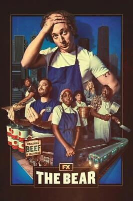

Movie ranking
Since I've long struggled with retaining the memory of the movies and series I've wathced, I have resolved to keep close tabs on the said pieces of film for the sake of the betternment of my memory.
Furthermore, I really need to start incorporating movies into my life, as I seem to have an unfair bias against them.
The bear

- I have born witness to this series permeating the internet and getting acclaimed by many. However, I was only able to watch the first two episodes for some reason. I really want to give it one more try, thus I am placing it here.
Young Royals season 3

- This series has been unable to captivate me so far, not in the meaningful way at least, though I suspect that is due to some inexplicable prejudice I possess tpwards it. Nevertheless, one must show appreciation to a constituent of LGBT series and watch it till the end. It is with that intention that I place this series here.
My beautiful laundrette

- This is a rather vintage movie, that, quite uncharacteristically of its kind, has been able to plague my attention for quite some time now. My desire is to see it with my boyfriend and ascertain whether the engrossment it had on me is justified or not